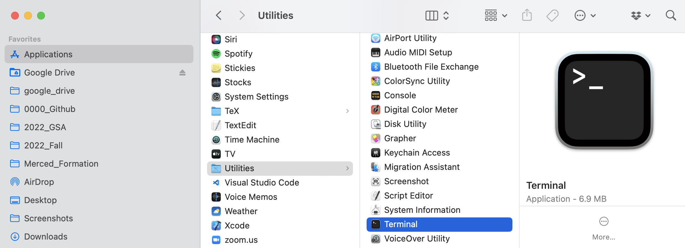
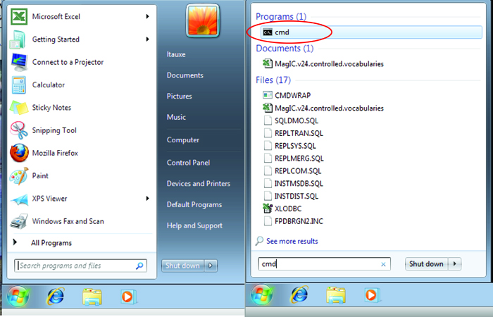

Survival computer skills
Contents
Survival computer skills#
The ‘Py’ part of ‘PmagPy’ stands for Python, the language in which all the code is written. It is not essential, but it is helpful, to understand a bit about computer operating systems and the Python language when using PmagPy because no one should be using programs as black boxes without understanding what they are doing. As all the programs are open source, you have the opportunity to look into them. If you understand a bit about how computers work yourself, you will be able to follow along what the programs are doing and even modify them to work better for you. In this chapter, you will find a brief introduction to the computer skills necessary for using the programs properly. We have tried to make this tutorial operating system independent. All the examples should work equally well on Mac OS, Windows and Unix-type operating systems. For a more complete explanation of the marvelous world of UNIX, refer to the website at http://www.tutorialspoint.com/unix/unix-quick-guide.htm. For handy tricks in DOS, try this link: http://www.c3scripts.com/tutorials/msdos. For an introduction to programming in Python, see the Python Programming Chapter. For now, we are interested in having the skills to find a command line and navigate the file system in order to get started with PmagPy.
Finding your command line#
If you are not using a Unix-like computer (NIX), you may never have encountered a command line. Using any of the command line programs requires accessing the command line. If you are using the MacOS operating system, look for the Terminal application in the Utilities folder within the Applications folder. When the Terminal application is launched, you will get a terminal window. The Unix (and MacOS) Bash shell has a $ sign as a prompt. Other shells have other command line prompts, such as the antiquated ‘C-shell’ used by Lisa Tauxe (don’t ask) which has a % prompt which is used in the examples here.
{kind=link}
Under the Windows operating system, you can find your command line by searching for the “Command Prompt” application.
{kind=link}
Note that the location of this program varies on different computers, so you may have to hunt around a little to find yours. Also, the actual “prompt” will vary for different machines.
File systems#
When you first open a terminal window, you are in your “home” directory.
Fundamental to all operating systems is the concept of directories and
files. On windows-based operating systems (MacOS or Windows),
directories are depicted as “folders” and moving about is accomplished
by clicking on the different icons. In the world of terminal windows,
the directories have names and are arranged in a hierarchical sequence
with the top directory being the “root” directory, known as “/” (or
C:\ in Windows) and the file system looks something like this:
{kind=link}
Within the root directory, there are subdirectories (e.g.
Applications and Users in bold face). In any directory, there
can also be “files” (e.g. dir_cart_example.dat). To refer to
directories, the operating system relies on what is called a “pathname”.
Every object has an “absolute” pathname which is valid from anywhere on
the computer. The absolute pathname in *NIX always begins from the root
directory / and in DOS (the operating system working in the Windows
command line window), it is C:\.
The absolute pathname to the home directory lisa in the figure is /Users/lisa. Similarly, the absolute pathname to the directory containing PmagPy scripts would be /Users/lisa/PmagPy. There is also a “relative” pathname, which is in reference to the current directory (the one you are ‘sitting’ in). If user “lisa” is sitting in her home directory, the relative pathname for the file dir_cart_example.dat in the directory data_files would be data_files/dir_cart/dir_cart_example.dat. When using relative pathnames, it is useful to remember that ./ refers to the current directory and ../ refers to the directory “above”. Also, lisa’s home directory would be \(\sim\)lisa, or if you are logged in as lisa yourself, then it is just \(\sim\).
Moving around in the file system#
Now that you have found your command line and are comfortable in your home directory, you can view the contents of your directory with the Unix command ls or the DOS command dir. You can make a new directory with the command
% mkdir NEW_DIRECTORY_NAME
This command works in both Unix and DOS environments) and you can move into your new directory with the command
% cd NEW_DIRECTORY_NAME
To move back up into the home directory, just type cd .. remembering that .. refers to the directory above. Also, cd by itself will transport you home from where ever you are (there’s no place like home….). You can also change to any arbitrary directory by specifying the full path of the destination directory.
Redirecting input and output#
Programs that operate at the command line level print output to the screen and read input from the keyboard. This is known as “standard input and output” or “standard I/O”. One of the nicest things about working at the command line level is the ability to redirect input and output. For example, instead of typing input to a program with the keyboard, it can be read from a file using the symbol :math:`<`. Output can either be printed to the screen (standard output), redirected into a file using the symbol :math:`>`, appended to the end of a file with :math:`>>` or used as input to another program with the pipe operator (:math:`|`).
Text editors#
There are many ways of editing text and the subject is beyond the scope of this documentation. Text editing is a blessing and a curse. You either love it or hate it and in the beginning, and if you are used to programs like Word, you will certainly hate it. (And if you are used to a decent text editor, you will hate Word!). But you can’t use Word because the output is in a weird format that no scripting languages read easily. So you have to use text editor that will produce a plain (ascii) file, like Notepad, TextWrangler, Sublime Text or Atom. TextWrangler is free software available for Macs, Notepad comes standard in the Windows operating system and the Atom text editor is a free cross-platform option with lots of nice packages available that extend its functionality.
Introduction to Python Programming#
There are many resources for learning Python, but Lisa Tauxe’s Python For Earth Science Students will give you a good foundation in programming Python with geology-specific applications. The course covers Python basics, Jupyter notebooks, and plotting and analysis with scientific Python libraries. The entire course is freely available in a Github repository. It is composed of an interactive series of lectures in the form of Jupyter notebooks.
To get started, you will need to install Python.
Then, download git and follow the
install instructions. If you don’t know whether you have git installed,
just type git on your command line and see if the help message
appears.
Open your command line
Clone the notebook respoitory:
git clone https://github.com/ltauxe/Python-for-Earth-Science-Students.git cd Python-for-Earth-Science-Students jupyter notebook
This will open a browser window with a list of Notebooks. Click on Lecture 1, which overviews the course and teaches you how to run Notebooks. From there, you can follow the lectures in order or pick and choose based on your interests. Python is a lot of fun - enjoy!
NB: For Anaconda-specific information, see this handy cheat sheet with information about how to install and update Python packages, as well as create custom Python environments and more.